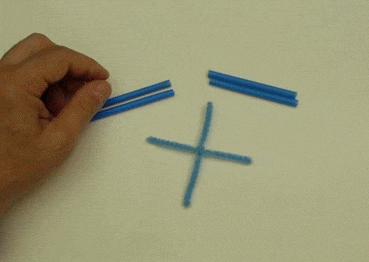
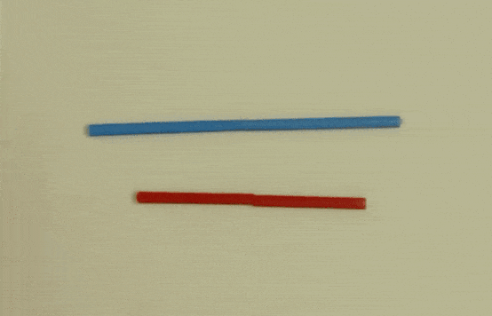

בנו צורות אפלטוניות בעצמכם עם MATHRILLS
MATHRILLS היא אוסף של כלים שמאפשרים לכל אחד לבנות צורות אפלטוניות, זאת מבלי לכבול אתכם לשום מוצר ייחודי עליו יש לנו זכויות יוצרים מגבילות וכל מוצר וכלי שאנחנו משתמשים ומציגים בפניכם, תוכלו להכין אותו ולהשיג אותו בעצמכם. הכלים איתם בונים את הצורות הם מנקי מקטרות וקשי פלסטיק, לכן לעולם לא תוכלו לחשוש שיגמר לכם חומר גלם להכין עוד צורות חדשות.
מי אנחנו?
MATHRILLS נוצרה מתוך אהבה לגופים האפלטוניים, לסימטריה המושלמת שלהם ולשילובים המפתיעים שלהם זה בזה. אנחנו מציעים דרכים פשוטות ומעניינות ליצור דגמים פיסיים של הגופים האלו, כאלה שניתן להחזיק ביד ולהניח על מדף. זו חוויה שאי אפשר לקבל מתמונה במסך המחשב, כשבונים אותם, רואים איך הם “נוצרים מעצמם” ומרגישים שיש כאן משהו מיוחד.
בעזרת הכלים שלנו, תוכלו להכין גופים כאלה בקלות: תוכלו לקנות את הערכות שלנו, להשתמש ברעיונות שלנו או ללמוד אתנו וללמד אותנו ליצור גוף ממשי עם הסימטריה המיוחדת הזו.
בערכות שלנו, בחרנו להשתמש בחומרים ובשיטות הרכבה מקוריות. ניתן לבנות גופים אפלטוניים ושילובים מורכבים שלהם, בקלות מפתיעה. התוצאה הסופית היא גוף אלגנטי וחזק שאינו מתפרק בקלות.
בחרנו להשתמש בקשים צבעוניים, מוטות במבוק ומנקי מקטרות - חומרים זמינים שנוצרו למטרות אחרות, הם הופכים את הבנייה לחוויה מעניינת, מעודדת חשיבה - חוויה של למידה. הגוף נוצר כי הגאומטריה מושלמת ולא כי מעצבים יצרו צעצוע מושלם.
על הערכות שלנו
המוטות: קש צבעוני ובתוכו מוט במבוק ומנקה מקטרות. הבמבוק מקשיח את המוט, מנקה המקטרות מצמיד ומחבר.

המחברים: כמו נקודה גאומטרית שבה נפגשים קווים, המחברים שלנו אינם מכתיבים כיוון למוטות, מאפשרים לבנות גופים בעלי זוויות שונות ללא הגבלה. המחברים עשויים ממנקי מקטרות מעוצבים לצורת X,Y או כוכב בעל 5 או 6 זרועות. הזרוע של המחבר נכנסת לקש למרות שבקש נמצא מוט ומנקה מקטרות וכך מתקבלת אחיזה טובה והחיבור אינו מתפרק בקלות:

חיבור של מוטות בהצלבה: כמו קווים מצטלבים בגאומטריה, כל קו נשאר ישר, כך גם המוטות שלנו “עוברים” אחד דרך השני ונשארים “שלמים”:

{kind=link}